원자력기사 (2015-09-12 기출문제)
1과목: 원자력기초
1. 다음 중 핵자에 대한 설명으로 옳은 것은?
- 중성자는 전기적으로 중립이고 안정한 입자이다.
- 양자는 중성자보다 가볍고 전자보다 전하량이 크다.
- 양전자와 음전자는 전하의 부호만 반대이고 나머지는 동일하다.
- 광자는 질량이 없고 진공에서 다양한 속도로 진행한다.
(정답률: 알수없음)

2. 붕산수를 원자로 제어에 이용하는 이유 중 가장 거리가 먼 것은?
- 제어봉과 함께 원자로를 임계로 유지
- 온도변화에 따른 반응도 보상
- 신속한 원자로 반응도 제어
- 핵연료 연소에 따른 반응도 보상
(정답률: 알수없음)
3. 다음 도플러효과에 대한 설명 중 맞는 것은?
- 연료의 온도상승으로 인하여 공명흡수가 증가되는 현상이다.
- 연료의 온도가 상승하면 U238, Pu240의 공명첨두치가 좁아진다.
- 도플러현상에 의해 원자로의 연료온도계수는 정(+)의 값을 갖는다.
- 도플러효과는 펠렛의 자기차폐(Self Sheilding)와는 무관하다.
(정답률: 알수없음)
4. 다음 중 원자로 구조물질이 가져야 할 특성이 아닌 것은?
- 용융점이 높을 것
- 매질의 중성자 흡수단면적이 클 것
- 성형가공이 쉬울 것
- 열전도도가 클 것
(정답률: 알수없음)
5. 다음 용어에 대한 설명 중 틀린 것은?
- 핵분열 생성물 : 무거운 원소가 핵분열에 의해서 생성된 핵종
- 핵분열 가능핵종 : 중성자를 흡수하여 핵분열 할 가능성이 있는 핵종
- 핵분열성 핵종 : 중성자 흡수 없이 자발적으로 분열을 일으키는 핵종
- 핵분열 원료핵종 : 핵분열 가능핵종 중에서 중성자를 흡수하여 핵분열성 핵종으로 전환되는 핵종
(정답률: 알수없음)
6. 어떤 물질로 중성자 차폐체를 설치하려고 한다. 중성자선의 세기를 원래의 0.1%로 줄이기 위한 차페체의 두께는? (단, 이 물질의 ∑a=6.9㎝-1, ∑s0㎝-1이다.)
- 약 0.1cm
- 약 1cm
- 약 10cm
- 약 100cm
(정답률: 알수없음)
7. 다음에 제시된 다양한 형상의 원자로들 중 최대 중성자속과 평균 중성자속 비율(
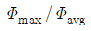
)이 가장 큰 변화는?- 직육면체 원자로
- 유한 원통형 원자로
- 무한 원통형 원자로
- 구형 원자로
(정답률: 알수없음)
8. 다음 중 노심에 반사체를 설치했을 때 얻을 수 있는 이익이 아닌 것은?
- 중성자 이용률 증대
- 핵연료 장전량 증가
- 원자로 압력용기의 피로도 감소
- 중성자속 구배의 평탄화
(정답률: 알수없음)
9. 중성자의 에너지와 흡수 또는 산란단면적과 관계에 대한 설명 중 틀린 것은?
- 미시적흡수단면적은 열중성자 영역에서 에너지가 커질수록 작아진다.
- 미시적 산란단면적은 중성자의 에너지 영역에 따라 크게 변화한다.
- 미시적 흡수단면적은 열외중성자 영역에서 공명한다.
- 미시적 흡수단면적은 속중성자 영역에서 작은 값을 가지며 불변이다.
(정답률: 알수없음)
10. 비균질(Hetero)와 균질(Homo) 원자로의 유효증배계수에 대한 특성을 비교한 것 중 맞는 것은?
- (fP)Hetero ＞ (fP)Homo
- fHetero ＞ fHomo
- εHetero ＜ εHomo
- PHetero ＜ PHomo
(정답률: 알수없음)
11. 핵분열에 의해 방출되는 에너지 종류 중에서 가장 큰 것은?
- 감마선 에너지
- 베타선 에너지
- 핵분열 중성자의 운동에너지
- 핵분열 단편의 운동에너지
(정답률: 알수없음)
12. 다음 중 중성자 확산방정식에 이용되는 Fick’s Law이 가장 잘 적용되는 경우는?
- 확산면적이 매우 클 때
- 중성자원에서 매우 가까울 때
- 매질의 중성자 흡수단면적이 매우 클 때
- 중성자 산란이 매우 비대칭일 때
(정답률: 알수없음)
13. 다음과 같이 원자로의 출력이 변화할 때 원자로 내의 Xe의 농도의 변화를 바르게 나타낸 것은?
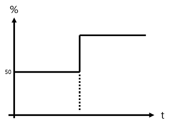
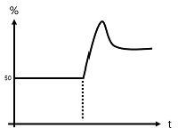
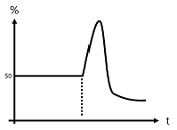
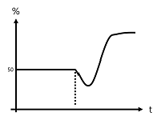
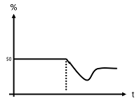
(정답률: 알수없음)
14. 구형 원자로에서 중성자속 분포 및 거시적 단면적이 다음과 같이 주어진 경우 가장 출력이 높은 위치에서 단위체적, 단위시간 발생하는 핵분열 수는?
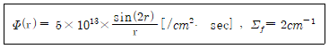
- 1×1013
- 1×1014
- 2×1013
- 2×1014
(정답률: 알수없음)
15. 가압경수로형 원전에서 가연성 독물질을 사용함으로서 얻을 수 있는 효과로 틀린 것은?
- 주기 초(BOC) 임계 붕소농도를 낮출 수 있다.
- 냉각재 온도계수를 보다 부(-)의 방향으로 만든다.
- 출력분포를 보다 평탄하게 만들 수 있다.
- 같은 핵연료 양으로도 주기길이 늘일 수 있다.
(정답률: 알수없음)
16. 가압경수로형 원전에서 2차 중성자 선원을 사용하는 이유는?
- 1차 중성자 선원이 전부 붕괴되었기 때문
- 중성자 검출기의 신뢰도를 얻기 위하여
- 운전시 높은
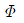
에 의하여 1차 중성자 선원이 파괴되었기 때문 - 운전후 재가동 시 분열생성물의 높은 감마 자연방사능으로 인하여 1차 중성자 선원을 사용할 수 없기 때문
(정답률: 알수없음)
17. 핵연료가 연소됨에 따라 노심의 변화에 대한 설명 중 틀린 것은?
- 중성자 재생계수 증가
- 냉각재 내의 붕소농도 감소
- 잉여반응도 감소
- 속핵분열 인자는 거의 변화 없음
(정답률: 알수없음)
18. 다음 중 냉각재 유량을 변화시킴으로서 반응도를 용이하게 제어할 수 있는 원자로는?
- PWR
- BWR
- CANDU
- LMFBR
(정답률: 알수없음)
19. 3% 농축도의 UO2연료 100톤을 장전한 원자로를 10일간 4,000MW의 열출력으로 계속 운전하였다. 이 기간 동안의 연소도(MWD/T)는 얼마인가?
- 약 450
- 약 4,000
- 약 12,000
- 약 13,000
(정답률: 알수없음)
20. 아래의 g군 확산 방정식에 대한 설명으로 옳은 것은?
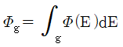
이다.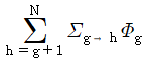
는 g그룹의 중성자가 산란반응을 통해 에너지를 얻고 h그룹의 중성자가 되는 것을 의미한다.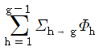
는 g그룹의 중성자가 산란반응을 통해 에너지를 잃고 h그룹의 중성자가 되는 것을 의미한다.- Sg는 g그룹의 중성자에 의한 핵분열 반응을 의미한다.
(정답률: 알수없음)
2과목: 핵재료공학 및 핵연료관리
21. 산화물 세라믹 핵연료가 금속 핵연료에 비해 가지는 장점은?
- 열전도도 율이 좋다.
- 녹는점이 낮다.
- 방사선 조사선상이 적다.
- 사용후연료 재처리가 용이하다.
(정답률: 알수없음)
22. 핵연료에 대한 설명으로 적절하지 않은 것은?
- 가압경수로 산화물 핵연료 내 가장 농도가 높은 원소는 U233이다.
- 질화물 연료인 UN은 밀도가 크고 열전도도가 크며 고속로 연료로 사용이 가능하다.
- 고농축 우라늄을 사용한 U-Al 합금이 연구용 원자로 연료로 많이 사용되었다.
- 토륨은 U233으로 핵변환 시킨 후 연료로 사용할 수 있다.
(정답률: 알수없음)
23. 가압경수로형 원전의 구조물과 구조물을 이루는 재료의 조합으로 알맞게 연결된 것은?
- 압력용기 : 타이타늄 합금
- 증기발생기 튜브 : 니켈계 합금
- 1차 냉각재계통 주배관 : 저합금강
- 복수기 튜브 : 알루미늄 합금
(정답률: 알수없음)
24. 지르코늄 합금 핵연료 피복재의 고연소도 조건에서 가장 심각한 문제점 2가지를 알맞게 연결한 것은?
- 마도현상과 성형가공성
- 성형가공성과 부식현상
- 부식현상과 크리프 변형
- 크리프 변형과 기계적 강도 감소
(정답률: 알수없음)
25. 가압경수로형 원전 1차 계통 냉각재와 접하는 구조재료에서 응력부식균열이 발생하는 요인을 바르게 설명한 것은?
- 빠른 유속, 중성자 조사, 냉각재 내 붕산
- 인장 응력, 빠른 유속, 예민화 된 미세조직
- 인장 응력, 예민화된 미세조직, 고온수 등의 환경요인
- 냉각재 내 붕산, 중성자 조사, 고온수 등의 환경요인
(정답률: 알수없음)
26. 국내 원자력안전법령에 따른 방사성폐기물의 분류와 적합한 처분방식을 연결한 것으로 가장 거리가 먼 것은?
- 고준위 방사성폐기물 : 심층처분
- 중준위 방사성폐기물 : 동굴처분
- 저준위 방사성폐기물 : 매립형 처분
- 극저준위 방사성페기물 : 천층처분
(정답률: 알수없음)
27. 냉각재의 방사분해에 대한 다음 설명 중 틀린 것은?
- 방사분해 반응으로 생성된 산화-환원성 라디칼들은 수용액 중에 균일하게 분포한다.
- 원자로 냉각재 중의 방사분해 반응 생성물의 농도는 계통재질의 부식에 영향을 준다.
- 일반적으로 방사화학에 사용되는 G값은 방사분해 반응 생성물의 수율을 측정하는 기준으로 매체에 흡수된 방사선 에너지 100eV에 의해 생성되는 핵종의 수를 나타낸다.
- 방사선에 조사된 원자로 냉각재는 산화라디칼뿐만 아니라 과산화수소 등과 같은 분자생성물이 생성된다.
(정답률: 알수없음)
28. 방사성표지화합물의 보관방법에 대한 설명으로 가장 거리가 먼 것은?
- 활성종의 포착제를 가하여 희석 및 보관한다.
- 비방사능을 높여 보관한다.
- 영하 40℃ 이하의 저온에서 보관한다.
- 진공 또는 불활성 기체를 충전하여 보관한다.
(정답률: 알수없음)
29. 사용후연료의 특성에 대한 다음 설명 중 틀린 것은?
- Np, Am, Cm 등과 같은 장반감기의 마이너액티나이드(MA)로 인해 사용 후 핵연료는 장기관 관리가 필요하다.
- 방사선 관점에서 초기에는 핵분열 생성물의 영향이 100 ~ 150년 이후에는 마이너 액티나이드의 영향이 대부분을 차지한다.
- 붕괴열 관점에서 초기에는 I, Tc에 의한 붕괴열이 대부분을 차지한다.
- 경수로 사용후연료에 비해 중수로 사용후연료는 마이너액티나이드 및 분열생성물을 적게 함유하고 있다.
(정답률: 알수없음)
30. 어느 해종에 대한 배수중의 배출관리 기준이 4×104Bq/m3이다. 방사능 농도가 1KBq/ℓ인 폐액을 방사능이 없고 유량률이300m3/hr인 물에 혼합하여 배출하고자 한다. 방사성 폐액의 유량률은 최대 몇 m3/hr이하인가?
- 5.5
- 8.5
- 10.5
- 12.5
(정답률: 알수없음)
31. 중성자 조사로 인한 일반적인 재료 손상을 설명한 것으로 적절하지 않은 것은?
- 중성자 조사는 원자 공동(Vacancy)과 침입형 원자(Interstital)를 유발한다.
- 조사로 인해 발생한 전위(Dislocations), 석출물들로 인해 경화가 발생한다.
- 전위에 침입형 원자가 우선 흡수되면서 원자 공동의 기포(Void)화가 발생한다.
- 낮은 온도 및 낮은 중성자 조사에서 헬륨이 생성되어 취성을 일으킨다.
(정답률: 알수없음)
32. 방사성 의약품으로 사용되는 방사성 핵종과 용도를 연결한 것으로 틀린 것은?
- C11 : 뇌혈류량 측정
- N13 : 췌장기능 진단
- F18 : 심근대사 기능 진단
- I131 : 간기능 진단
(정답률: 알수없음)
33. 다음 중 사용후연료 중간저장시설의 핵심적인 안전요소로서 가장 거리가 먼 것은?
- 핵임계 방지
- 피복재 보온
- 방사선 차폐
- 방사성물질 격납
(정답률: 알수없음)
34. 국내 가압경수로형 원전에서 이용되고 있는 소내 사용후연료 저장용량 확장 방법으로 가장 거리가 먼 것은?
- 호기간 이송
- 조밀랙 저장
- 저장대 추가설치
- 건식 중간저장
(정답률: 알수없음)
35. 다음 중 우라늄 동위원소 분리방법에 대한 설명으로 가장 거리가 먼 것은?
- 전기분해 공정은 전력소모가 많지만 공정이 단순하고 분리계수가 높아 우라늄 동위원소 분리공정에 많이 이용된다.
- 기체확산법은 분리계수가 거의 1에 가깝기 때문에 많은 단계의 캐스케이드 작업이 필요하다.
- 공기역학을 이용한 노즐분리법은 반원형의 곡면 벽에 기체를 주입하여 원심력 차이로 분리하는 방법이다.
- 질량확산법은 혼합기체 중 가벼운 성분의 동위원소가 무거운 성분의 동위원소보다 빨리 확산되는 성질을 이용한 방법이다.
(정답률: 알수없음)
36. 가압경수로형 원전에서 1차 또는 2차 계통수의 pH를 조절하기 위해 사용하는 화합물끼리 묶은 것은?
- LiOH, N2H4
- HNO3, N2H4
- LiOH,, NH4OH
- HNO3, NH3
(정답률: 알수없음)
37. 다음 괄호 안에 들어갈 것끼리 묶은 것은?
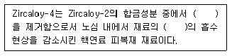
- Ni, 수소
- Sn, 수소
- Ni, 열중성자
- Hf, 열중성자
(정답률: 알수없음)
38. 연료의 초기농축도 검사 및 원자로의 기동용 중성자 선원으로 주로 이용되는 방사성 핵종은?
- Pu238
- Am241
- Pu239
- Cf252
(정답률: 알수없음)
39. 우라늄 변환 공정의 불화수소화 반응에서 생성되는 물질은?
- 사불화 우라늄
- 육불화 우라늄
- 불산
- 이산화우라늄
(정답률: 알수없음)
40. 우라늄 농축공장에서 천연우라늄 100kg을 이용해 생산할 수 있는 농축우라늄의 질량은 얼마인가? (단, 천연우라늄, 농축우라늄 및 감손우라늄의 질량기준 U235존재비는 각각 0.7%, 4.3% 및 0.3%로 가정한다.)
- 6.4kg
- 10kg
- 11.4kg
- 13.4kg
(정답률: 알수없음)
3과목: 발전로계통공학
41. 원자로 압력용기에서 가압열충격(PTS)에 의한 파손 가능성을 낮출 수 있는 방법이 아닌 것은?
- 원자로 압력용기의 두께 증가
- 비상노심냉각계통의 냉각수 주입 온도 증가
- 노심대영역의 용접부 제거
- 저누설 장전모형 핵연료 배치를 통한 RPV 내벽의 조사선량 저감
(정답률: 알수없음)
42. 가압경수로형 원전에서 격납용기 살수계통의 기능과 관계가 없는 것은?
- 설계기준사고 후 격납용기 내의 수소 제거
- 설계기준사고 후 격납용기 내의 압력상승 억제
- 설계기준사고 후 격납용기 내의 온도상승 억제
- 설계기준사고 후 격납용기 내의 요오드 화합물 및 입자 제거
(정답률: 알수없음)
43. 가압경수로형 원전의 연료 피복재 표면에 생성되는 산화막의 두께는 피복재의 표면온도에 비례한다. 다음 중 연료 피복재 표면에서 축방향 위치에 따른 산화막의 두께 분포를 바르게 나타낸 것은?
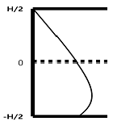
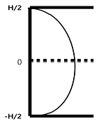
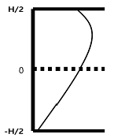
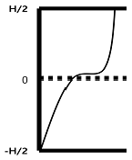
(정답률: 알수없음)
44. 한국 표준형 원전의 안전주입계통에 대한 설명으로 틀린 것은?
- 설계기준사고 시 냉각재계통에 붕산수를 주입한다.
- 고압 안전주입계통과 저압 안전주입계통은 안전주입 작동신호에 따라 자동으로 작동한다.
- 안전주입탱크는 RCS의 고온관에 연결되어 냉각재계통의 압력이 탱크압력 이하로 감소하면 자동으로 주입된다.
- 고압 안전주입펌프는 소외전원 상실 시에도 일정시간 이내에 비상디젤발전기로부터 전원을 공급받도록 설계된다.
(정답률: 알수없음)
45. 한국표준형 원전의 노내계측기에 대한 설명으로 틀린 것은?
- 연료집합체의 연소도를 평가할 수 있는 자료를 제공한다.
- 노심의 열적여유도를 평가할 수 있는 자료를 제공한다.
- 원자로출력 20% 이상으로 전체 출력분포를 결정한다.
- 출력운전 중 안전등급 신호르 발전소 보호계통에 전송한다.
(정답률: 알수없음)
46. 원자로 압력용기의 감시시험 프로그램에 대한 설명으로 틀린 것은?
- 감시시험 함은 노심 중앙의 연료집합체 사이에 설치된다.
- 감시시험 함에는 시편과 함께 온도 감시자와 중성자속 감시자가 내장되어 있다.
- 감시시험 프로그램에는 중성자 조사에 의한 원자로 압력용기의 기계적 물성치 변화를 감시하기 위한 수단이다.
- 감시시험 함의 인출시기는 조사선량과 수명말기에 예상되는 기준 무연성 천이온도 변화량에 따라 결정된다.
(정답률: 알수없음)
47. 전기출력 1,000MWe인 원전에서 초당 소모되는 U235의 양과 가장 가까운 값은? (단, 에너지는 U235의 핵분열에 의해서만 생산되며 핵분열 당 생성에너지는 200MeV/fission, 1MeV=1.6×10-13J, 열효율은 33%를 가정한다.)
- 10mg/s
- 40mg/s
- 100mg/s
- 400mg/s
(정답률: 알수없음)
48. 다음 (가) ~ (라)에 들어갈 단어로 적절하게 연결된 것은?
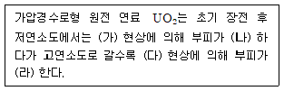
- 팽윤, 감소, 고밀화, 증가
- 팽윤, 증가, 고밀화, 감소
- 고밀화, 감소, 팽윤, 증가
- 고밀화, 증가, 팽윤, 감소
(정답률: 알수없음)
49. 원자로 압력용기는 운전연수가 증가하면 중성자 조사에 의해 기준무연성천이온도와 최대충격흡수에너지가 변화한다. 각각의 변화를 바르게 기술한 것은?
- 모두 증가
- 모두 감소
- 무연성 천이온도 증가, 최대 충격 흡수에너지 감소
- 무연성 천이온도 감소, 최대 충격 흡수에너지 증가
(정답률: 알수없음)
50. 연료봉 중심온도와 냉각재 온도 사이의 열저항을 증가시키는 요인으로 맞는것끼리 연결된 것은?
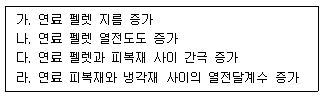
- 가, 나
- 가, 다
- 나, 다
- 나, 라
(정답률: 알수없음)
51. 배관에 유체가 흐를 때 압력강하에 영향을 미치는 인자가 아닌 것은?
- 유체의 속도
- 배관의 직경
- 유체의 밀도
- 유체의 표면장력
(정답률: 알수없음)
52. 원자로의 열수로계수(HCF)에 대한 설명으로 틀린 것은?
- HCF는 연료의 연소도에 영향을 받는다.
- 균질한 원자로에 비해 실제 원자로의 열수로계수가 더 높다.
- HCF가 낮을수록 원자로 노심의 안전여유도는 증가한다.
- HCF는 연료 및 피복재의 가공상 공차에 영향을 받는다.
(정답률: 알수없음)
53. 직경이 10mm이고 봉 사이의 거리가 20mm인 연료봉 다발을 통과하는 유체의 레이놀드(Re) 수와 유동특성을 바르게 연결한 것은? (단, 유체의 속도는 5m/s, 밀도는 1,000kg/m3, 점성계수는 10-3kg/m・s이다.)
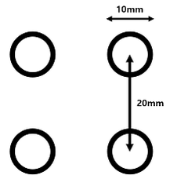
- 2,046 : 층류
- 2,046 : 난류
- 204,000 : 층류
- 204,000 : 난류
(정답률: 알수없음)
54. 원형관 내부를 흐르면서 가열되는 유체유동에 대한 열전달 계산을 하려 한다. 누셀(Nu)수로부터 열전달계수를 구하고자 할 때, 필요한 인자를 바르게 연결한 것은?
- 관 지름, 관의 열전도도
- 관 지름, 유체의 열전도도
- 관 길이, 관의 열전도도
- 관 길이, 유체의 열전도도
(정답률: 알수없음)
55. 가압기에 대한 설명으로 맞는 것은?
- RCS를 포화상태로 일정하게 유지하기 위해 압력을 보상하는 역할을 한다.
- 냉각재계통의 압력이 일정수준 이상으로 가압되지 않도록 가압기 하부에 안전밸브가 설치되어 있다.
- 기동운전 시 출력에 비례하여 작동하는 비례전열기와 정상운전 시 압력신호에 의해 작동하는 보조전열기가 있다.
- 정상운전 중에도 가압기와 냉각재계통의 붕산농도 분포를 균일하게 하고 성층화되는 것을 방지하기 위해 분무기가 작동한다.
(정답률: 알수없음)
56. 원전 원자로 노심의 핵비등 이탈(DNB) 지점에 대한 설명 중 틀린 것은?
- 핵비등에서 부분막비등으로 천이되는 지점
- 열전달률이 급격히 증가하는 지점
- 임계열유속인 지점
- 안전제한치로 관리되어야 하는 지점
(정답률: 알수없음)
57. 가압경수로형 원전에서 습분분리재열기(MSR)와 저압터빈을 연결하는 증기배관 내부에 마찰과 열손실이 동시에 존재할 때, 다음 T-S선도상의 위치변화가 적절한 것은?
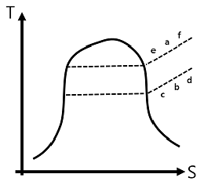
- 배관 마찰 : 과정 a ~ b , 열손실 : 과정 b ~ c
- 배관 마찰 : 과정 a ~ b , 열손실 : 과정 b ~ d
- 배관마찰 : 과정 b ~ a , 열손실 : 과정 a ~ f
- 배관마찰 : 과정 b ~ a , 열손실 : 과정 a ~ e
(정답률: 알수없음)
58. 가압경수로형 원전 2차측의 열효율을 향상시킬 수 있는 방안끼리 바르게 연결한 것은?
- 증기 압력 강하, 복수기 압력 강하
- 증기 압력 강하, 복수기 압력 상승
- 증기 압력 상승, 복수기 압력 강하
- 증기 압력 상승, 복수기 압력 상승
(정답률: 알수없음)
59. 원전에서 사용되고 있는 차압식 유량계의 오리피스 및 노즐 등이 마모되어 구경이 확대될 경우 실제 유량 대비 지시되는 유량은?
- 실제보다 높게 지시한다.
- 실제보다 낮게 지시한다.
- 실제와 같게 지시한다.
- 주기적으로 요동친다.
(정답률: 알수없음)
60. 냉각재 펌프에서 관성바퀴(Fly Wheel)을 설치하는 주요 이유는?
- 펌프 정지 시 냉각재 계통의 수격현상을 방지
- 전원상실 시 펌프의 감속시간을 지연시켜 노심냉각을 연장
- 펌프정지 시 급격한 정지에 의해 펌프 축 등 기계적 장치를 보호
- 펌프기동 시 RCS 배관 고진동을 방지
(정답률: 알수없음)
4과목: 원자로 안전과 운전
61. 다음 중 원자로 건물 설계 시 고려되는 수소 발생원이 아닌 것은?
- 피복재의 물과의 반응
- 냉각재로부터의 발생 수소
- 노심 및 집수조의 물의 방사선 분해
- 원자로건물 내 설치한 탱크의 상부기체 배기
(정답률: 알수없음)
62. 다음은 원자로의 DNB 운전여유도를 증가시키는 요인을 맞게 나열한 것은? (단, CR은 제어봉(Control Rod)로 가정한다.)
- RCS 유량증가, 유량 증가, 냉각재계통 압력증가, 출력 증가
- RCS 유량 증가, 평탄한 노심출력분포, RCS 압력증가, 출력 감소
- RCS 온도 감소, RCS 압력 증가, SG 출력분포, 불균형 출력분포
- RCS 온도 증가, 불균형 출력분포, RCS 압력감소, 부적절한 CR IN
(정답률: 알수없음)
63. 다음 중 원자로 기동 후 출력(100%)으로 운전동안 노심 전 수명기간에 걸쳐 반응도에 영향을 주는 인자로서 가장 거리가 먼 것은?
- 연료연소
- 플루토늄 축적
- 제논 축적
- 가연성독물질 소멸
(정답률: 알수없음)
64. 원자로가 한달 동안 출력운전 후 정지(Trip)되었다. 정지여유도는 떻게 변하는가?
- 증가하다 감소
- 감소하다 증가
- 계속 커진다.
- 계속 작아진다.
(정답률: 알수없음)
65. 출력운전 중 원자로의 열수로계수(HCF)가 제한치 이내로 유지하는지를 확인하는 방법으로 적당치 않은 것은?
- 제어봉 삽입한계 이상 유지
- 제어봉 그룹 내 편차가 제한치 이내 유지
- 축방향 출력편차가 제한치 이내 유지
- 냉각재 붕소농도의 목표치 범위 이내 유지
(정답률: 알수없음)
66. 출력 100% 운전 중인 PWR형 운전 고온관 과냉각 여유도는 얼마인가?
- 19.5℃
- 35.5℃
- 50.5℃
- 66.5℃
(정답률: 알수없음)
67. 가압경수로형 원전 출력운전 시 제어봉은 삽입한계 이상으로 유지하여 제어한다. 다음 중 틀린 것은?
- 정지여유도 유지
- 고온관을 일정온도 이상 유지
- 제어봉 이탈사고 시 삽입되는 정(+)반응도 제한
- 중성자속 분포를 고르게 하여 출력분포를 제한치 이내로 유지
(정답률: 알수없음)
68. 가압경수로형 원전에서 LOCA 발생 시 나타나는 증상이 아닌 것은?
- 냉각재 압력 감소
- 격납건물 압력 증가
- 격납건물 방사선량 증가
- 복수기 배기기체 방사선량 증가
(정답률: 알수없음)
69. 가압경수로형 원전의 운전 중에 비정상 상황이 발생하였다. 다음 중 원자로가 자동으로 정지되는 신호가 아닌 것은?
- 가압기 저압력
- 증기발생기 저수위
- 격납건물 저압력
- 냉각재 저유량
(정답률: 알수없음)
70. 다음 냉각재계통 기기 중 냉각재 상태가 다른 영역은?
- 가압기
- RCP
- RV(RPV)
- SG 1차측
(정답률: 알수없음)
71. 다음 중 원자로 사고 시 방사성 물질 방출방지벽의 건전성 유지를 위해 감시되어야 하는 필수 안전기능 중 가장 거리가 먼 것은?
- 반응도 제어
- 원자로건물 압력제어
- 냉각재 재고량 제어
- 원자로건물 집수조 수위 제어
(정답률: 알수없음)
72. 출력운전 중 냉각재펌프(RCP)가 모두 정지된 경우 원자로의 자연순환 냉각이 이루어지고 있음을 확인할 수 있는 방법이 아닌 것은?
- RCS 압력이 일정 혹은 증가
- RCS 온도가 일정 혹은 감소
- RCS △T ≤ 전출력 △T
- RCS의 과냉각도 15℃ 이상
(정답률: 알수없음)
73. 다음 중 2차 계통에 의한 열제거 증가현상을 유발하지 않는 것은?
- 급수온도 감소
- 주증기 격리밸브 닫힘
- 주증기 유량 증가
- SG 방출밸브 열림
(정답률: 알수없음)
74. 가압경수로형 원전이 CVCS의 기능 설명으로 틀린 것은?
- 정상분무 불능 시 충전유량 일부를 가압기 분무관으로 공급
- 유출 및 충전유량을 조절하여 가압기 수위 유지
- 설계기준사고 시 RCS에 고농도의 붕산수를 직접 주입
- 체적제어탱크(VCT)에 수소를 가압하여 냉각재 내 산소농도 제어
(정답률: 알수없음)
75. 다음 설명에 해당되는 원전의 설계 원칙은?
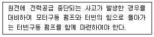
- 다중성
- 독립성
- 다양성
- 연계성
(정답률: 알수없음)
76. 후쿠시마 원전사고의 시사점 중 우리에게 주는 주요 고려사항이 아닌 것은?
- 사이버 보안 강화
- 비상 대체수단 적기 공급
- 격납시설 성능 강화 및 수소제어계통 개선
- 다수호기 원전사고를 가정한 비상대응능력 강화
(정답률: 알수없음)
77. 중대사고 발생 시 사고 전개에 따른 사고관리 단계를 순서대로 바르게 나열한 것은?
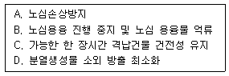
- A → B → C → D
- A → D → B → C
- B → C → A → D
- D → A → B → C
(정답률: 알수없음)
78. 다음 중 한국표준형 원전의 발전소 보호계통에 해당되지 않는 것은?
- 원자로 보호계통(RPS)
- 다중보호계통(DPS)
- 터빈보호계통(TPS)
- 공학적 안전설비 작동신호(ESFAS)
(정답률: 알수없음)
79. 다음 내용이 공통적으로 설명하는 것은?
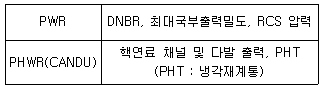
- 안전제한치
- 설계기준사고
- 안전정지기준
- 방사선 비상발령
(정답률: 알수없음)
80. 다음 중 원전 운영기술지침서에 기술되어야 하는 내용이 아닌 것은?
- 원자로 시설의 운전
- 원자로 시설의 운영관리
- 원자로 시설의 방사선 및 환경관리
- 원자로 시설의 방사선 비상계획
(정답률: 알수없음)
5과목: 방사선이용 및 보건물리
81. 6MeV 알파입자가 자신의 에너지를 모두 잃고 정지하였다면 이론적으로 반치폭(FWHM)은 약 얼마인가? (단, W값은 30eV, 파노인자(Fano Factor)은 0.1이다.0
- 10KeV
- 20KeV
- 30KeV
- 40KeV
(정답률: 알수없음)
82. 방사선의 생물학적 영향에 대한 설명 중 틀린 것은?
- 분화정도가 낮은 세포가 방사선 감수성이 높다.
- 동일선량일 경우 전신조사에 비해 국부조사는 반치사선량이 낮아진다.
- 혈중 산소분압이 높은 조건하에서 조사하면 반치사 선량이 낮아진다.
- 선량률이 높아지면 반치사 선량이 낮아진다.
(정답률: 알수없음)
83. 기체 충전형 검출기의 출력펄스 크기에 영향을 미치는 인자에 대한 설명 중 틀린 것은?
- 검출기의 크기 및 충전기체의 밀도가 클수록 이온쌍이 많이 발생
- 입사 방사선의 양 및 에너지가 클수록 이온쌍이 많이 발생
- 고유 이온화도가 작은 방사선이 이온쌍을 많이 발생
- 인가전압이 클수록 2차 이온화작용에 의해 이온쌍이 많이 발생
(정답률: 알수없음)
84. 1MeV의 감마선을 납으로 차폐하여 차폐 전 세기의 1/8으로 줄이기 위하여 약 2.58cm의 두께가 필요하다고 한다. 납의 선형감쇄계수는 얼마인가? (단, 축적인자는 무시한다.)
- 1.101㎝-1
- 0.806㎝-1
- 0.631㎝-1
- 0.453㎝-1
(정답률: 알수없음)
85. 방사성 시료의 계측 시 최소 검출방사능(MDA)을 낮추기 위한 방법으로 알맞은 것은?
- 측정시간을 길게 시료의 양은 적게한다.
- 측정시간을 짧게 시료의 양은 작게한다.
- 측정시간을 길게 시료의 양은 많이한다.
- 측정시간을 짧게 시료의 양은 많이한다.
(정답률: 알수없음)
86. 다음 설명 중 틀린 것은?
- 저 LET 방사선이 고 LET 방사선에 비해 산소 효과비(OER)의 값이 크다.
- 방사선 피폭 후 백혈병의 발생은 일정한 잠복기를 갖은 후 연령이 증가할수록 발생빈도가 증가한다.
- LET가 증가하면 RBE도 증가하다가 최대 값에 도달한 후 감소한다.
- 방사선피폭에 따른 일반 고형암의 발생은 최소 잠복기 이후 노년까지 계속적으로 증가한다.
(정답률: 알수없음)
87. 상용 고순도 반도체 검출기(HPGe) 검출기(FWHM : 2KeV)의 다중파고분석기(MCA) 채널수를 설정하고자 한다. 측정하고자 하는 방사선 에너지 범위가 3MeV인 경우 이론적으로 이상적인 채널 수는 얼마로 설정하는 것이 좋은가?
- 1,500
- 3,000
- 6,000
- 12,000
(정답률: 알수없음)
88. 방사선 계측에 대한 설명으로 틀린 것은?
- 섬광체와 형광체는 빛을 방출하는 메카니즘 차이로 설명할 수 있다.
- 유기섬광물질은 주로 삼중수소 등의 측정에 많이 사용된다.
- 무기섬광물질이 유기섬광물질에 비해 선형성이 좋다.
- 베타선원에 대한 계측효율에서 선원의 두께별 효율관계는 선원의 두께가 증가할수록 계수효율이 감소하는 특징이 있다.
(정답률: 알수없음)
89. 베타 방출핵종을 차폐할 때 알맞은 방법은?
- 가벼운 물질을 앞에 두고 무거운 물질을 뒤에 배치한다.
- 무거운 물질을 앞에 두고 가벼운 물질을 뒤에 배치한다.
- 가벼운 물질로만 사용하여 차폐한다.
- 무거운 물질로만 사용하여 차폐한다.
(정답률: 알수없음)
90. 방사선과 물질과의 상호작용을 바르게 설명한 것은?
- 엑스선과 감마선은 이온화 방사선으로서 물질을 직접적으로 이온화시킨다.
- 광전효과는 입사 감마선이 원자의 궤도전자와 충돌하여 에너지의 일부를 잃는다.
- 쌍전자생성은 전자의 정지에너지인 0.511MeV에서 일어날 수 있다.
- 알파선과 베타선은 물질 속을 지나면서 비정에 도달하면 운동에너지를 모두 잃고 가정한다.
(정답률: 알수없음)
91. 다음 중 전자가 물질과 상호작용하여 방사선을 발생하는 제동복사 현상에 대하여 틀리게 설명한 것은?
- 제동복사에 의하여 연속 엑스선이 발생한다.
- 제동복사는 전자와 상호작용하는 물질의 Z에 비례하여 증가한다.
- 입사 전자의 최대 에너지가 클수록 제동복사는 더 잘 일어난다.
- 밀도가 큰 물질을 사용하여 제동복사 발생을 낮출 수 있다.
(정답률: 알수없음)
92. 다음 중 방사선 방호에 관하여 바르게 설명한 것은?
- 의료방사선방호에는 간병인을 제외하고 환자, 의생명 연구 대상으로 참여하여 방사선을 피폭하는 자원자에 대한 방호가 포함된다.
- 선량제약치는 모든 피폭상황에서 단일 선원으로부터 방호를 위하여 사용되는 개념이다.
- 환자 의료피폭을 포함한 계획피폭상황의 규제된 선원으로부터 개인이 받는 총 선량은 규정에 의한 한도르 초과하지 않아야 한다.
- 선량한도 적용원칙은 기존피폭상황의 결과로서 확실히 발생할 것으로 예상되는 선량에만 적용된다.
(정답률: 알수없음)
93. 5분 동안 시료계수가 510, 자연계수(BKG)는 1시간 동안 2400이다. 시료의 순계수율과 표준편차는 각각 얼마인가?
- 102cpm, 45cpm
- 102cpm, 4.6cpm
- 62cpm, 4.6cpm
- 62cpm, 4.4cpm
(정답률: 알수없음)
94. 다음 괄호 안에 들어갈 수 있는 것으로 알맞게 연결된 것은?
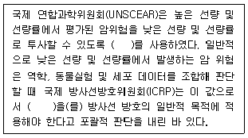
- 생물학적 효과비(RBE), 2
- 선량 및 선량률 효과인자(DDREF), 2
- 생물학적 효과비(RBE), 1
- 선량 및 선량률 효과인자(DDREF), 1
(정답률: 알수없음)
95. 기존피폭(Existing Exposure)에 대해 ICRP-103에서 권고하는 참조준위는 얼마인가?
- 1 ~ 5mSv
- 1 ~ 10mSv
- 1 ~ 20mSv
- 1 ~ 50mSv
(정답률: 알수없음)
96. 유리성 섬유 필터를 이용하여 작업장 내 부유성 공기시료를 포집하였다. 작업장 내 공기오염도(Bq/m3)은 얼마인가? (단, 필터의 포집효율은 80%이며 포집기 유량률은 2.5ℓ/min, 포집시간 100분, 계측기 측정효율은 10%, 계수값은 2400cpm(자연계수값 제외)이다.)
- 250
- 500
- 1,000
- 2,000
(정답률: 알수없음)
97. 80MHz로 운영되는 Wilkinson-type ADC를 사용하는 MCA의 불감시간은 얼마인가? (단, 펄스의 저장시간은 2.5μs이고, 운영하는 채널은 300채널이다.)
- 6.25μs
- 7.25μs
- 8.25μs
- 9.25μs
(정답률: 알수없음)
98. 표면오염 측정방법에 대한 설명으로 틀린 것은?
- 직접법은 자연계수가 높은 장소에는 적합하지 않다.
- 간접법은 전이율에 많은 영향을 받는다.
- 간접법은 모든 방사능 오염원에 대하여 스메어 용지를 이용하여 100cm2을 직접 문질러 시료를 채취한 후 방사선 측정기를 이용하여 방사능 오염의 정도를 평가하는 방법이다.
- 간접법은 방사성폐기물 저장드럼용기 표면오염 검사 등에 많이 사용된다.
(정답률: 알수없음)
99. 반도체 검출기에 대한 설명으로 틀린 것은?
- W값이 작기 때문에 에너지 분해능이 좋다.
- 검출기 내 전자와 정공의 이동속도는 같다.
- 효율은 3"×3" Nal(Tl) 계측기에 대한 상대효율로 정의되고 있다.
- 반치폭(FWHM)이 크면 에너지 분해능이 떨어진다.
(정답률: 알수없음)
100. Al26 핵종의 스펙트럼 분석에서 가장 작은 에너지 영역에서 나타나는 피크는?
- 제동복사
- 단일 이탈피크
- 엑스선 이탈피크
- 소멸 피크
(정답률: 알수없음)